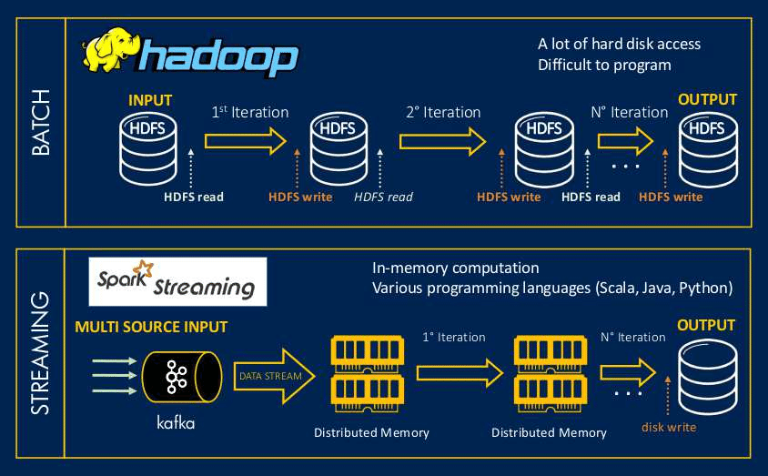

When I was working in the software industry, I got an opportunity to work for Discover Card, Chicago. At that time, I didn’t realize that this project would completely change the way I look at data, scale, and architecture.
Discover Card is not just processing transactions. Every single swipe creates:
On an average day, we were handling hundreds of millions of records.
Limitation: MapReduce jobs took hours and were not suitable for near real-time fraud detection.
Data science teams demanded faster experimentation and analytics.
Apache Spark was added on top of Hadoop:
Card Swipes / ATM / Mobile App
|
v
Data Ingestion (Sqoop / Flume / FTP)
|
v
HDFS (Data Lake)
----------------------------
| |
MapReduce Apache Spark
(Batch & Compliance) (Analytics & ML)
| |
Hive Tables Spark SQL / ML
| |
----------------------------
|
BI / Fraud Teams
Architecture decisions were no longer emotional — they were use-case driven.
This journey taught me that Big Data is not about tools, but about architectural thinking. Hadoop gave us scale, Spark gave us speed, and together they enabled trust in banking systems.
To store and process massive historical transaction data at low cost using distributed storage and batch processing.
HDFS with data replication.
Because it is disk-based and has high latency, making it unsuitable for near real-time analytics.
In-memory processing with DAG-based execution.
Hadoop MapReduce.
Scenario 1: Fraud reports are required within 5 minutes instead of overnight. What change would you suggest?
Scenario 2: Regulatory team needs 7 years of transaction history for audits.
Scenario 3: Data scientists want to iteratively train fraud models.
The same Hadoop + Spark hybrid architecture can be implemented on AWS as follows:
Card Transactions
|
v
Kinesis / DMS
|
v
Amazon S3 (Data Lake)
------------------------------
| |
EMR MapReduce EMR Spark
(Batch & Compliance) (Analytics & ML)
| |
Athena / Hive Spark SQL / ML
| |
------------------------------
|
QuickSight / Fraud Teams